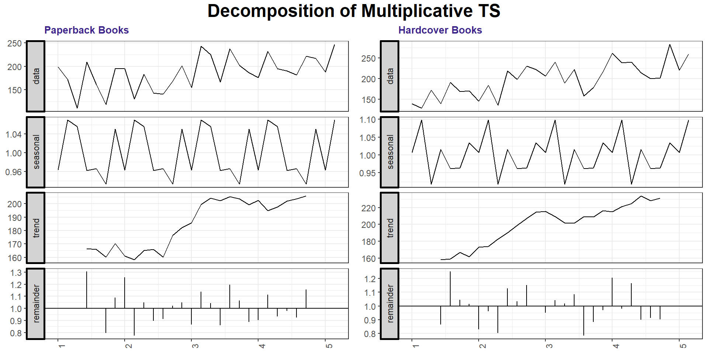
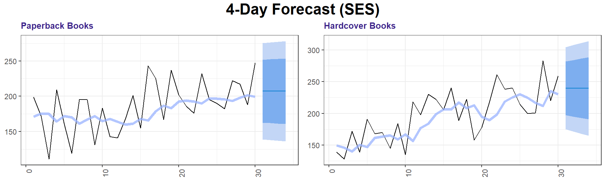
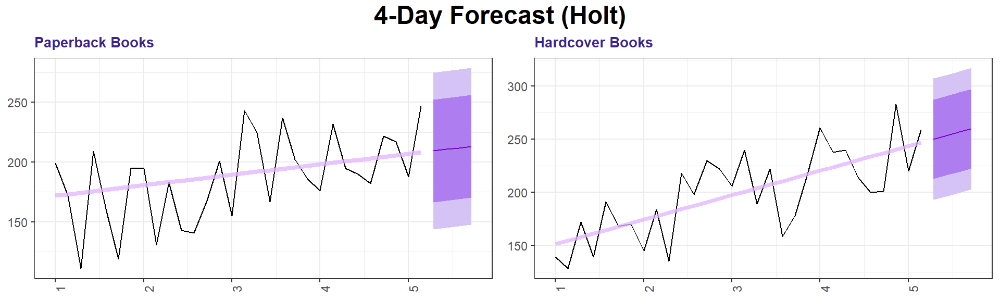
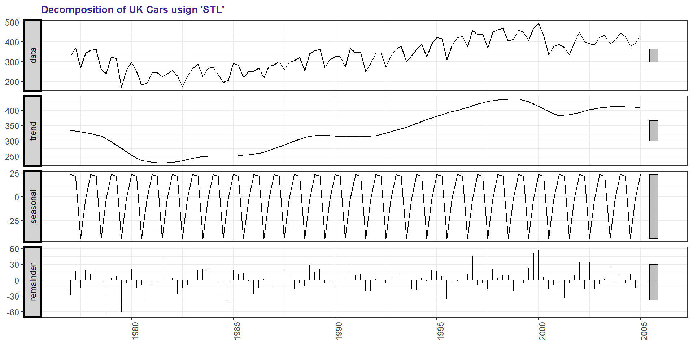
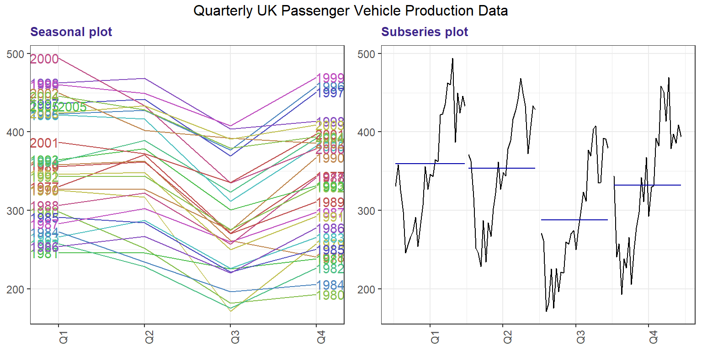
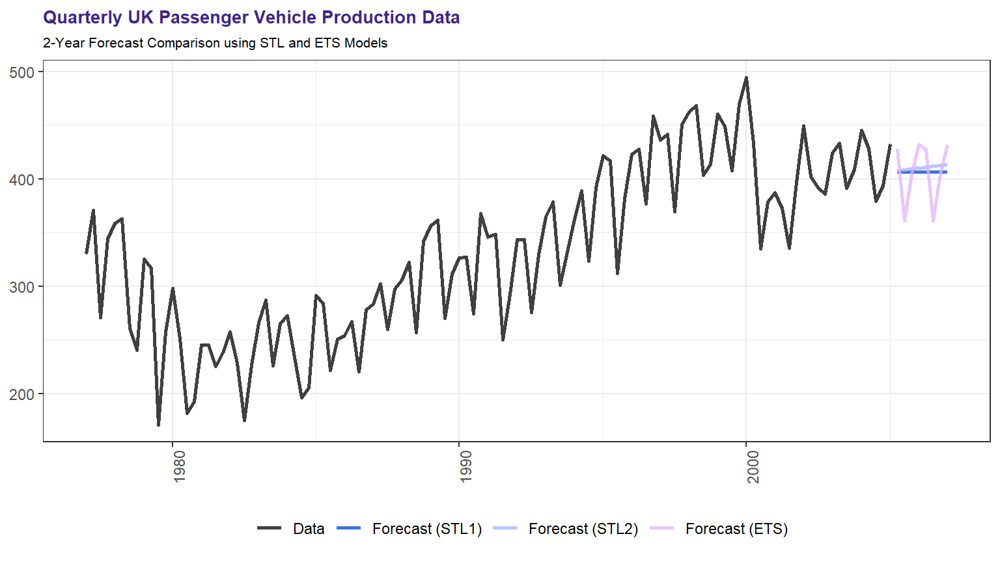

5 Assignment Five
- Hyndman 7.5
- Hyndman 7.6
- Hyndman 7.10
#Textbook Packages
library(fpp2)
library(AppliedPredictiveModeling)
library(mlbench)
#Processing
library(tidyverse)
#Graphing
library(ggplot2)
library(grid)
library(gridExtra)
library(lemon)
#Math
library(caret)
library(forecast)
library(randomForest)
library(seasonal)
library(psych)
library(corrplot)
#Formatting
library(knitr)
library(kableExtra)
library(default)5.1 Hyndman 7.5
Data set books contains the daily sales of paperback and hardcover books at the same store. The task is to forecast the next four days’ sales for paperback and hardcover books.
5.1.1 a. Plot the series and discuss the main features of the data.
5.1.1.1 Timeseries Plot
The books data shows an overall positive trend over the 30-day period for paperback and hardcover books. There is heavy fluctuation between days, suggesting seasonality within the time series. While paperbacks and hardcovers both have a similar range of unit sales, peaks and valleys are not well synchronized.
autoplot(books, facet = TRUE) + labs(title = "Daily Sales of Paperback and Hardcover Books",
x = "Days", y = "Sales") + theme_bw() +
theme()
5.1.1.2 Decomposed Plot
We can look at the decomposed timeseries to better understand the trend and seasonality on a weekly basis. Sales tend to peak three times per week and increase throughout the entire month. The paperback books trend increases more drastically between weeks two and four, while hardcover books appear to have smoother incline. Hardcover books also show sharper fluctuations in the seasonal component.
paperback <- books[, 1]
hardcover <- books[, 2]
pb_plot <- ts(paperback, frequency = 7) %>%
decompose(type = "multiplicative") %>%
autoplot() + labs(title = "Paperback Books",
x = "Weeks") + theme_bw() + theme()
hc_plot <- ts(hardcover, frequency = 7) %>%
decompose(type = "multiplicative") %>%
autoplot() + labs(title = "Hardcover Books",
x = "Weeks") + theme_bw() + theme()
grid.arrange(pb_plot, hc_plot, ncol = 2,
top = textGrob("Decomposition of Multiplicative TS",
gp = gpar(fontface = "bold", cex = 1.5)))
5.1.2 b. Use the ses() function to forecast each series, and plot the forecasts.
5.1.2.1 Paperback SES
FALSE
FALSE Forecast method: Simple exponential smoothing
FALSE
FALSE Model Information:
FALSE Simple exponential smoothing
FALSE
FALSE Call:
FALSE ses(y = paperback, h = 4)
FALSE
FALSE Smoothing parameters:
FALSE alpha = 0.1685
FALSE
FALSE Initial states:
FALSE l = 170.8271
FALSE
FALSE sigma: 34.8183
FALSE
FALSE AIC AICc BIC
FALSE 318.9747 319.8978 323.1783
FALSE
FALSE Error measures:
FALSE ME RMSE MAE
FALSE Training set 7.175981 33.63769 27.8431
FALSE MPE MAPE MASE
FALSE Training set 0.4736071 15.57784 0.7021303
FALSE ACF1
FALSE Training set -0.2117522
FALSE
FALSE Forecasts:
FALSE Point Forecast Lo 80 Hi 80 Lo 95
FALSE 31 207.1097 162.4882 251.7311 138.8670
FALSE 32 207.1097 161.8589 252.3604 137.9046
FALSE 33 207.1097 161.2382 252.9811 136.9554
FALSE 34 207.1097 160.6259 253.5935 136.0188
FALSE Hi 95
FALSE 31 275.3523
FALSE 32 276.3147
FALSE 33 277.2639
FALSE 34 278.20055.1.2.2 Hardcover SES
FALSE
FALSE Forecast method: Simple exponential smoothing
FALSE
FALSE Model Information:
FALSE Simple exponential smoothing
FALSE
FALSE Call:
FALSE ses(y = hardcover, h = 4)
FALSE
FALSE Smoothing parameters:
FALSE alpha = 0.3283
FALSE
FALSE Initial states:
FALSE l = 149.2861
FALSE
FALSE sigma: 33.0517
FALSE
FALSE AIC AICc BIC
FALSE 315.8506 316.7737 320.0542
FALSE
FALSE Error measures:
FALSE ME RMSE MAE
FALSE Training set 9.166735 31.93101 26.77319
FALSE MPE MAPE MASE
FALSE Training set 2.636189 13.39487 0.7987887
FALSE ACF1
FALSE Training set -0.1417763
FALSE
FALSE Forecasts:
FALSE Point Forecast Lo 80 Hi 80 Lo 95
FALSE 31 239.5601 197.2026 281.9176 174.7799
FALSE 32 239.5601 194.9788 284.1414 171.3788
FALSE 33 239.5601 192.8607 286.2595 168.1396
FALSE 34 239.5601 190.8347 288.2855 165.0410
FALSE Hi 95
FALSE 31 304.3403
FALSE 32 307.7414
FALSE 33 310.9806
FALSE 34 314.07925.1.2.3 Plot
pb_ses_plot <- autoplot(pb_ses, size = 1,
fcol = "#0044cc") + autolayer(fitted(pb_ses),
series = "Fitted", alpha = 0.75, size = 1.5,
color = "#99b3ff") + labs(title = "Paperback Books",
y = "Sales", x = "Days") + theme_bw() +
theme()
hc_ses_plot <- autoplot(hc_ses, size = 1,
fcol = "#0044cc") + autolayer(fitted(hc_ses),
series = "Fitted", alpha = 0.75, size = 1.5,
color = "#99b3ff") + labs(title = "Hardcover Books",
y = "Sales", x = "Days") + theme_bw() +
theme()
grid.arrange(pb_ses_plot, hc_ses_plot, ncol = 2,
top = textGrob("4-Day Forecast (SES)",
gp = gpar(fontface = "bold", cex = 1.5)))
As SES may work well when their is no clear trend or seasonal pattern. As it generates the next probable value and uses that for all future forecasting values, however ses() may not be the best long-term forecasting model for this particular data.
5.1.3 c. Compute the RMSE values for the training data in each case.
The root mean squared error (RMSE) is calculated below and tells us the spread between the residual errors from our predicted and observed using the SES method. The RMSE for paperback books is slightly higher than hardcover, suggesting better accuracy in the later’s predictions.
# manual calculation
sqrt(mean(pb_ses$residuals^2))
sqrt(mean(hc_ses$residuals^2))
# caret package
RMSE(fitted(pb_ses), paperback)
RMSE(fitted(hc_ses), hardcover)Paperback RMSE: 33.6376868
Hardcover RMSE: 31.931015
5.2 Hyndman 7.6
5.2.1 a. Now apply Holt’s linear method to the paperback and hardback series and compute four-day forecasts in each case.
hardcover <- ts(books[, 2], start = 1, frequency = 7)
softbound <- ts(books[, 1], start = 1, frequency = 7)
hb <- ses(hardcover, h = 5)
sb <- ses(softbound, h = 5)
acc_soft <- accuracy(sb)
acc_hard <- accuracy(hb)
holt_soft <- holt(softbound, seasonal = "additive",
h = 4)
holt_hard <- holt(hardcover, seasonal = "additive",
h = 4)
acc_holt_hard <- accuracy(holt_hard)
acc_holt_soft <- accuracy(holt_soft)
pb_holt_plot <- autoplot(holt_soft, size = 1,
fcol = "#7733ff") + autolayer(fitted(holt_soft),
series = "Fitted", alpha = 0.75, size = 1.5,
color = "#e0b3ff") + labs(title = "Paperback Books",
y = "Sales", x = "Days") + theme_bw() +
theme()
hc_holt_plot <- autoplot(holt_hard, size = 1,
fcol = "#7733ff") + autolayer(fitted(holt_hard),
series = "Fitted", alpha = 0.75, size = 1.5,
color = "#e0b3ff") + labs(title = "Hardcover Books",
y = "Sales", x = "Days") + theme_bw() +
theme()
grid.arrange(pb_holt_plot, hc_holt_plot,
ncol = 2, top = textGrob("4-Day Forecast (Holt)",
gp = gpar(fontface = "bold", cex = 1.5)))
As would be expected, Holt’s linear method generates a linear trend forecast.
5.2.2 b. Compare the RMSE measures of Holt’s method for the two series to those of simple exponential smoothing in the previous question. Discuss the merits of the two forecasting methods for these data sets.
Remember that Holt’s method is using one more parameter than SES.
RMSE Exponential Smoothed Hardcover Sales: 31.931
RMSE Exponential Smoothed Paperback Sales: 33.638
RMSE Holt-Winters Hardcover Sales: 27.194
RMSE Holt-Winters Paperback Sales: 31.137
The Holt-Winter method does indeed reduce the root mean squared errors for both the paperback and hardcover book sales. This would suggest that there is in fact some level of trend acting on the book sales series.
5.2.3 c. Compare the forecasts for the two series using both methods. Which do you think is best?
fc_hh <- forecast(holt_hard)
fc_sh <- forecast(holt_soft)
fc_hes <- forecast(hb, h = 4)
fc_ses <- forecast(sb, h = 4)
p1 <- autoplot(softbound) + autolayer(fc_ses,
series = "SES Paperback", PI = FALSE) +
autolayer(fc_sh, series = "Holt Paperback",
PI = FALSE) + labs(title = "Paperback Sales",
x = "Year", y = "Daily Sales of Paperback Books") +
theme_bw() + theme(legend.position = "bottom")
p2 <- autoplot(hardcover) + autolayer(fc_hes,
series = "SES Paperback", PI = FALSE) +
autolayer(fc_hh, series = "Holt Paperback",
PI = FALSE) + labs(title = "Hardcover Sales",
x = "Year", y = "Daily Sales of Hardcover Books") +
theme_bw() + theme(legend.position = "bottom")
grid.arrange(p1, p2, nrow = 1, top = textGrob("Methods Comparison",
gp = gpar(fontface = "bold", cex = 1.5)))
While Holt’s method provided better accuracy measures (RMSE), it is a tough choice to pick one model over the other because neither is particularly robust over the long term. the SES is providing a continuous flat prediction which we can see is clearly not how the series has evolved in the past. On the other hand Holt’s method does account for the trend but not the seasonality, so at some point it too would fail. Choosing a model from the two should be done based on your end need (ses being more conservative than holt’s method) and with the understanding that more than a few observations forward and either of them will likely underperform.
5.2.3.1 d. Calculate a 95% prediction interval for the first forecast for each series, using the RMSE values and assuming normal errors. Compare your intervals with those produced using ses and holt.
pi_ses_s <- 1.96 * acc_soft[2]
pi_ses_h <- 1.96 * acc_hard[2]
pi_hl_s <- 1.96 * acc_holt_soft[2]
pi_hl_s <- 1.96 * acc_holt_hard[2]
l_interval_ses_s <- round(fc_ses$mean[1] -
pi_ses_s, 3)
l_interval_ses_h <- round(fc_hes$mean[1] -
pi_ses_h, 3)
l_interval_hl_s <- round(fc_sh$mean[1] -
pi_hl_s, 3)
l_interval_hl_h <- round(fc_hh$mean[1] -
pi_hl_s, 3)
u_interval_ses_s <- round(fc_ses$mean[1] +
pi_ses_s, 3)
u_interval_ses_h <- round(fc_hes$mean[1] +
pi_ses_h, 3)
u_interval_hl_s <- round(fc_sh$mean[1] +
pi_hl_s, 3)
u_interval_hl_h <- round(fc_hh$mean[1] +
pi_hl_s, 3)| Model Lower | Model Upper | Calculated Lower | Calculated Upper | |
|---|---|---|---|---|
| SES Softbound | 138.867 | 275.352 | 141.18 | 273.04 |
| SES Hardbound | 174.78 | 304.34 | 176.975 | 302.145 |
| Holt Softbound | 143.913 | 275.021 | 156.167 | 262.766 |
| Holt Hardbound | 192.922 | 307.426 | 196.874 | 303.473 |
The manually calculated and library-generated prediction intervals are not exactly the same, but they are close. Manual intervals are a bit less consistent with the library computed interval values using the Holt’s linear method than they are with exponentially smoothed (SES) version. Additionally, as SES entails a flat forecast with higher RMSE, its interval is slightly wider than that generated by Holt’s linear method.
5.3 Hyndman 7.10
For this exercise use data set ukcars, the quarterly UK passenger vehicle production data from 1977Q1–2005Q1.
5.3.1 a. Plot the data and describe the main features of the series.
ukcdata <- window(ukcars, start = 1977, end = 2005)
autoplot(ukcdata) + labs(title = "Quarterly UK Passenger Vehicle Production Data",
y = "Production", x = "Year")
There appears to be a general upward trend in production from 1982-Q3 to 2000-Q1. The overall time series shows fluxuations between years suggesting an underlying seasonality component. There also is some less structured periodicity and random-like variation.
5.3.2 b. Decompose the series using STL and obtain the seasonally adjusted data.
5.3.3 STL Decomposition
Through decomposition, we can confirm the overall increasing trend described in part (a). There are consistant seasonal fluxations which can we can futher evaluate using a seasonal plot.
ukc_stl <- stl(ukcars, t.window = 13, s.window = "periodic",
robust = TRUE)
ukc_stl %>% autoplot() + ggtitle("Decomposition of UK Cars usign 'STL' ") +
theme_bw() + theme()
5.3.4 Seasonal Plots
With the seasonal plot, we can see that our overal seasonality component increases between Q1-Q2, decreases Q2-Q3, and increases Q3-Q4. The intensity of the fluxuations vary by year. There are a few exceptions to this observation, for example, 2000 shows a two quarter decrease between Q1-Q3.
The subseries plot further confirms our seasonal pattern and shows that the smallest pattern changes occur between Q1-Q2. The decreases and increases between Q2-Q4 are much more distingushable.
ukc_s_plot <- ggseasonplot(ukcdata, year.labels = TRUE,
year.labels.left = T, col = rainbow(12,
s = 0.6, v = 0.75)) + labs(title = "Seasonal plot",
y = "Production") + theme_bw() + theme()
ukc_ss_plot <- ggsubseriesplot(ukcdata) +
labs(title = "Subseries plot", y = "Production") +
theme_bw() + theme()
grid.arrange(ukc_s_plot, ukc_ss_plot, ncol = 2,
top = "Quarterly UK Passenger Vehicle Production Data")
We can capture the seasonal component observed in the data and control for the changes overtime using a seasonal adjustment. We compared the seasonally adjusted data to the observed data for ukcars below:
ukc_seas <- seasadj(ukc_stl)
autoplot(ukcdata, series = "Data") + autolayer(ukc_seas,
series = "Seasonally Adjusted") + labs(title = "Quarterly UK Passenger Vehicle Production Data",
subtitle = "Seasonally Adjusted Comparison",
x = "Year", y = "Production") + scale_colour_manual(values = c("#bfbfbf",
"#99b3ff"), breaks = c("Data", "Seasonally Adjusted",
"Trend")) + theme_bw() + theme(legend.position = "bottom")
5.3.5 c. Forecast the next two years of the series using an additive damped trend method applied to the seasonally adjusted data. (This can be done in one step using stlf() with arguments etsmodel=“AAN”, damped=TRUE.)
As the data is seasonally adjusted, we use an AAN model (error = A, trend = A, and seasonal = N). Damped models are often better at forecasting long-run values.
5.3.5.1 Forecast

5.3.6 d. Forecast the next two years of the series using Holt’s linear method applied to the seasonally adjusted data (as before but with damped=FALSE).
We again use an AAN model (error = A, trend = A, seasonality = N) - this time without damping, so point forecasts are a little bit higher.
5.3.6.1 Forecast

5.3.7 e. Now use ets() to choose a seasonal model for the data.
ETS automatically chooses the best model by minimizing AIC, which results in a error = A, trend = N, seasonal = A model.
5.3.7.1 Seasonal Model
FALSE ETS(A,N,A)
FALSE
FALSE Call:
FALSE ets(y = ukcdata)
FALSE
FALSE Smoothing parameters:
FALSE alpha = 0.6199
FALSE gamma = 1e-04
FALSE
FALSE Initial states:
FALSE l = 314.2568
FALSE s = -1.7579 -44.9601 21.1956 25.5223
FALSE
FALSE sigma: 25.9302
FALSE
FALSE AIC AICc BIC
FALSE 1277.752 1278.819 1296.844
FALSE
FALSE Training set error measures:
FALSE ME RMSE MAE
FALSE Training set 1.313884 25.23244 20.17907
FALSE MPE MAPE MASE
FALSE Training set -0.1570979 6.629003 0.6576259
FALSE ACF1
FALSE Training set 0.02573334
5.3.8 f. Compare the RMSE of the ETS model with the RMSE of the models you obtained using STL decompositions. Which gives the better in-sample fits?
Our STL decomponsition, using additive damped trend method with no seasonal components (\(A, A_d, N\)), produced the best in-sample fit. This model provided us with the lowest RMSE, suggesting the highest degree of accuracy between our predicted and observed data. We should note, however, there is a very small variation in RMSE between all STL and ETS models.
- STL: 25.2604123
- HOLT: 25.1598573
- ETS: 25.2324409
5.3.9 g. Compare the forecasts from the three approaches? Which seems most reasonable?
The forecasts from the ETS (\(A, N, A\)) model appears most reasonable and fits our data best. This is not surprising as the ets function automatically selects the methodology based on the provided data. The forecasts using STL were both linear, whereas the ETS model was able to predict seasonal pattern changes across our 2-year (8-quarter) prediction.
ukc_series <- cbind(Data = ukcdata, `Forecast (STL1)` = ukc_stlf1[["mean"]],
`Forecast (STL2)` = ukc_stlf2[["mean"]],
`Forecast (ETS)` = ukc_ets_fc[["mean"]])
autoplot(ukc_series, size = 1, alpha = 0.75) +
scale_color_manual(name = "", values = c("#000000",
"#0044cc", "#99b3ff", "#e0b3ff")) +
labs(title = "Quarterly UK Passenger Vehicle Production Data",
subtitle = "2-Year Forecast Comparison using STL and ETS Models",
x = "Years", y = "Production") +
theme_bw() + theme(legend.position = "bottom")
5.3.10 h. Check the residuals of your preferred model.
The plots below contains our residuals data from the preferred ETS model. We observed constant variance and normally distribution of our residuals, suggesting our model has adequately captured the information from the ukcars data
cbind(Residuals = residuals(ukc_ets), `Forecast errors` = residuals(ukc_ets,
type = "innovation")) %>% autoplot(facet = TRUE) +
labs(title = "Residuals from ETS (A,N,A) model of UKcars data",
x = "Year") + theme_bw() + theme()